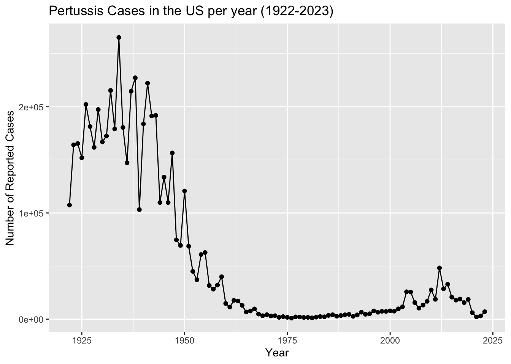
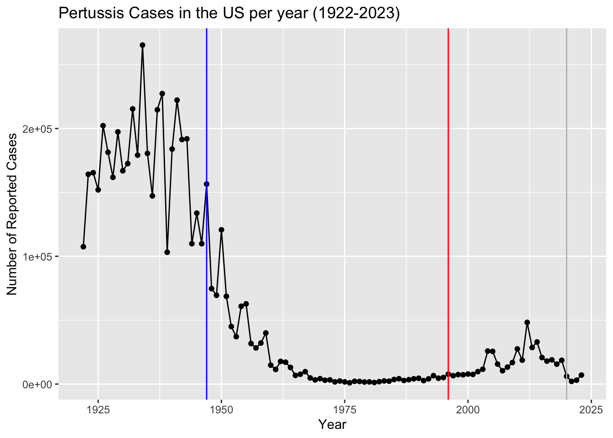
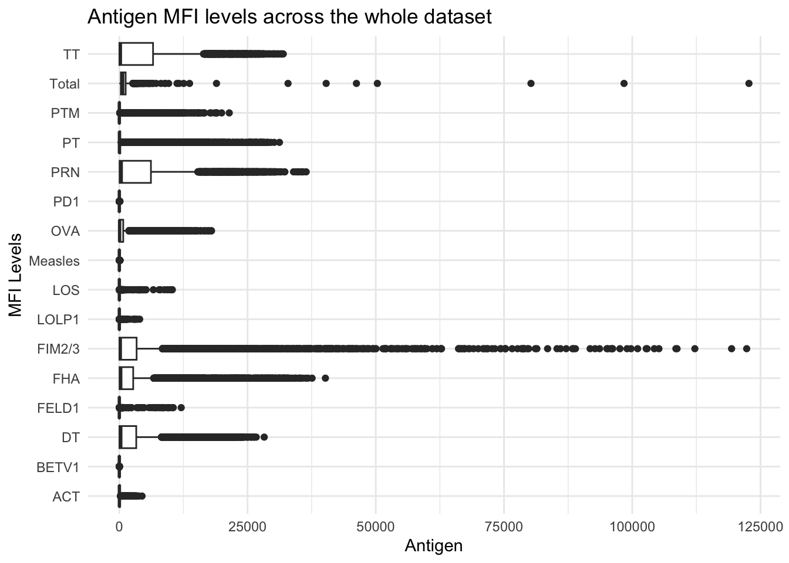
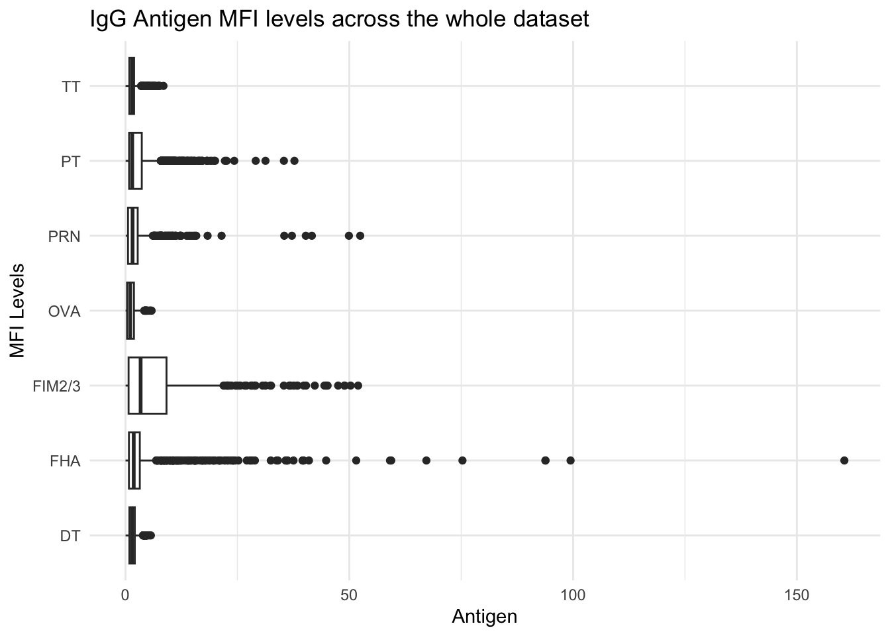
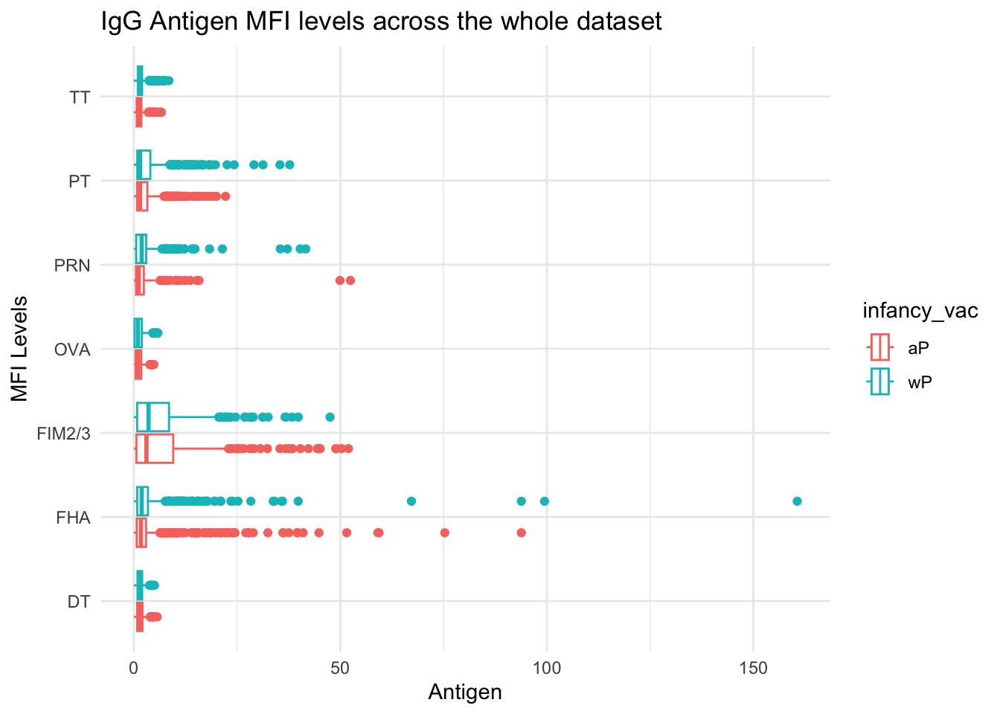
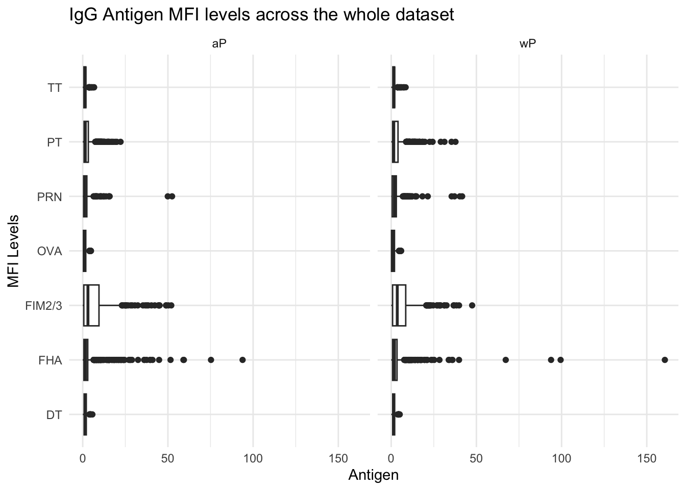
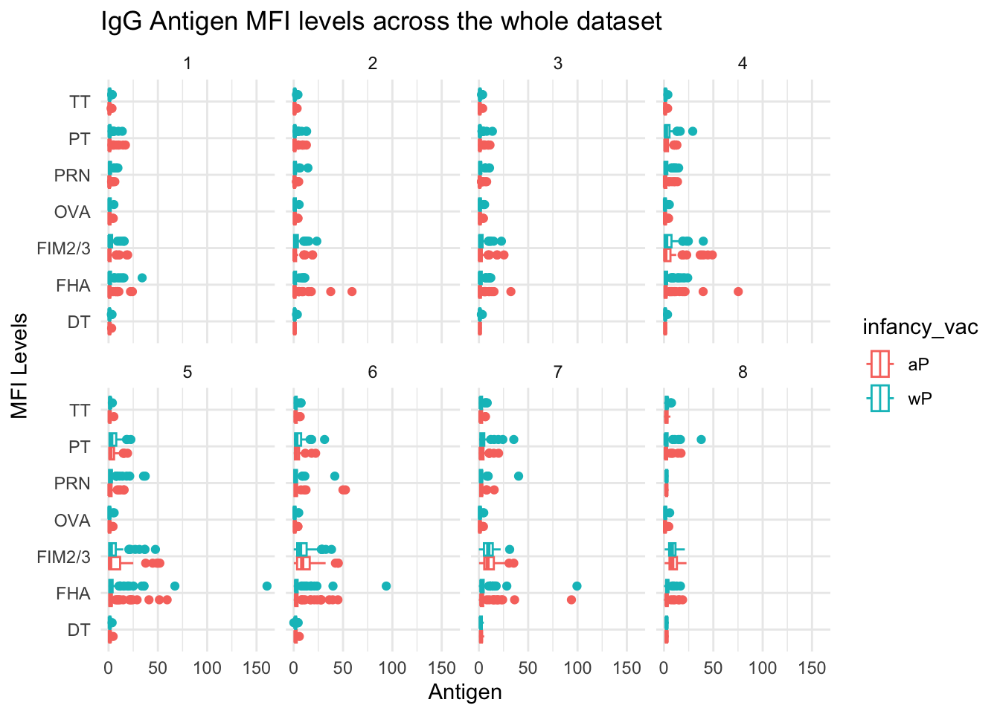
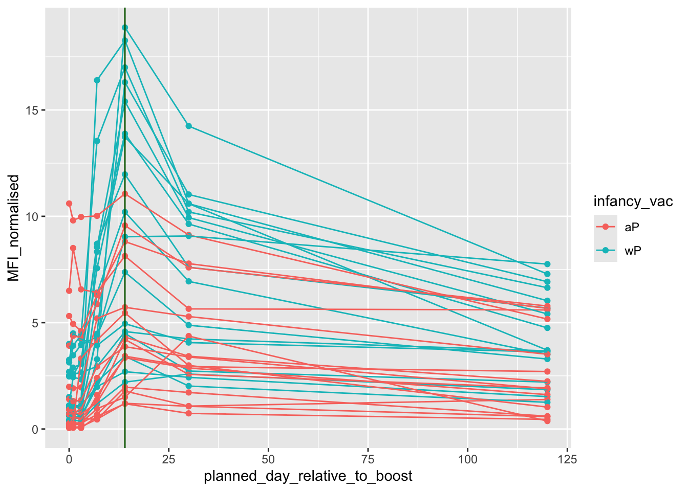

library(ggplot2)
library(jsonlite)
library(dplyr)pertussis_miniproject
Background
Pertussis (a.k.a Whoooping cough) is a highly infectious lung infection caused by the bacteria B. Pertussis.
The CDC tracks case numbers in the US and makes this data available online:
Q1. Make a plot of Pertussis cases per year with ggplot
ggplot(cdc) +
aes(year, cases) +
geom_point() +
geom_line() +
labs(
title = "Pertussis Cases in the US per year (1922-2023)",
x = "Year",
y = "Number of Reported Cases"
)
Q2. Add some annotation (lines on the plot) for some major milestones in our interaction with Pertussis. The original wP vaccine was introduced in 1947 and the newer aP vaccine was introduced in 1996, and the COVID-19 pandemic began in 2020.
ggplot(cdc) +
aes(year, cases) +
geom_point() +
geom_line() +
labs(
title = "Pertussis Cases in the US per year (1922-2023)",
x = "Year",
y = "Number of Reported Cases"
) +
geom_vline(xintercept = 1947, col="blue") +
geom_vline(xintercept = 1996, col="red") +
geom_vline(xintercept = 2020, col="grey") 
Q3. Describe what happened after the introduction of the aP vaccine? Do you have a possible explanation for the observed trend?
There is an increase in cases 10 years after the aP vaccine was introduced, which may be due to waning immunity from that particular vaccine. Basically, the wP vaccince was more effective than the aP despite severe side effects.
The CMI-PB project
The CMI-Pertussis Boost (PB) project focuses on gathering data on this very topic. What is distinct between the aP and wP individuals over time when they encounter Pertussis again.
They make their data available via a JSON format returning API. We can read JSON formate with the read_json() function from the jsonlite package.
subject <- read_json("http://cmi-pb.org/api/v5_1/subject", simplifyVector = TRUE)
head(subject) subject_id infancy_vac biological_sex ethnicity race
1 1 wP Female Not Hispanic or Latino White
2 2 wP Female Not Hispanic or Latino White
3 3 wP Female Unknown White
4 4 wP Male Not Hispanic or Latino Asian
5 5 wP Male Not Hispanic or Latino Asian
6 6 wP Female Not Hispanic or Latino White
year_of_birth date_of_boost dataset
1 1986-01-01 2016-09-12 2020_dataset
2 1968-01-01 2019-01-28 2020_dataset
3 1983-01-01 2016-10-10 2020_dataset
4 1988-01-01 2016-08-29 2020_dataset
5 1991-01-01 2016-08-29 2020_dataset
6 1988-01-01 2016-10-10 2020_datasetQ4. How many “subjects” (or individuals) are in this dataset?
There are 172 subjects in this dataset.
Q5. How many wP and aP primmed subjects are there in the dataset?
table(subject$infancy_vac)
aP wP
87 85 Q6. What is the
biological_sexandracebreakdown of the subjects in the dataset?
table(subject$race, subject$biological_sex)
Female Male
American Indian/Alaska Native 0 1
Asian 32 12
Black or African American 2 3
More Than One Race 15 4
Native Hawaiian or Other Pacific Islander 1 1
Unknown or Not Reported 14 7
White 48 32Let’s read more tables from teh CMI-PB database API
specimen <- read_json("http://cmi-pb.org/api/v5_1/specimen", simplifyVector = TRUE)
ab_titer <- read_json("http://cmi-pb.org/api/v5_1/plasma_ab_titer", simplifyVector = TRUE)Join using the inner_join() function from the dplyr package.
meta <- inner_join(subject, specimen)Joining with `by = join_by(subject_id)`head(meta) subject_id infancy_vac biological_sex ethnicity race
1 1 wP Female Not Hispanic or Latino White
2 1 wP Female Not Hispanic or Latino White
3 1 wP Female Not Hispanic or Latino White
4 1 wP Female Not Hispanic or Latino White
5 1 wP Female Not Hispanic or Latino White
6 1 wP Female Not Hispanic or Latino White
year_of_birth date_of_boost dataset specimen_id
1 1986-01-01 2016-09-12 2020_dataset 1
2 1986-01-01 2016-09-12 2020_dataset 2
3 1986-01-01 2016-09-12 2020_dataset 3
4 1986-01-01 2016-09-12 2020_dataset 4
5 1986-01-01 2016-09-12 2020_dataset 5
6 1986-01-01 2016-09-12 2020_dataset 6
actual_day_relative_to_boost planned_day_relative_to_boost specimen_type
1 -3 0 Blood
2 1 1 Blood
3 3 3 Blood
4 7 7 Blood
5 11 14 Blood
6 32 30 Blood
visit
1 1
2 2
3 3
4 4
5 5
6 6ab_data <- inner_join(meta, ab_titer)Joining with `by = join_by(specimen_id)`head(ab_data) subject_id infancy_vac biological_sex ethnicity race
1 1 wP Female Not Hispanic or Latino White
2 1 wP Female Not Hispanic or Latino White
3 1 wP Female Not Hispanic or Latino White
4 1 wP Female Not Hispanic or Latino White
5 1 wP Female Not Hispanic or Latino White
6 1 wP Female Not Hispanic or Latino White
year_of_birth date_of_boost dataset specimen_id
1 1986-01-01 2016-09-12 2020_dataset 1
2 1986-01-01 2016-09-12 2020_dataset 1
3 1986-01-01 2016-09-12 2020_dataset 1
4 1986-01-01 2016-09-12 2020_dataset 1
5 1986-01-01 2016-09-12 2020_dataset 1
6 1986-01-01 2016-09-12 2020_dataset 1
actual_day_relative_to_boost planned_day_relative_to_boost specimen_type
1 -3 0 Blood
2 -3 0 Blood
3 -3 0 Blood
4 -3 0 Blood
5 -3 0 Blood
6 -3 0 Blood
visit isotype is_antigen_specific antigen MFI MFI_normalised unit
1 1 IgE FALSE Total 1110.21154 2.493425 UG/ML
2 1 IgE FALSE Total 2708.91616 2.493425 IU/ML
3 1 IgG TRUE PT 68.56614 3.736992 IU/ML
4 1 IgG TRUE PRN 332.12718 2.602350 IU/ML
5 1 IgG TRUE FHA 1887.12263 34.050956 IU/ML
6 1 IgE TRUE ACT 0.10000 1.000000 IU/ML
lower_limit_of_detection
1 2.096133
2 29.170000
3 0.530000
4 6.205949
5 4.679535
6 2.816431Q7. How many different Ab isotypes are there?
unique(ab_data$isotype)[1] "IgE" "IgG" "IgG1" "IgG2" "IgG3" "IgG4"Q8. How many differnt Antigens are there in the dataset?
unique(ab_data$antigen) [1] "Total" "PT" "PRN" "FHA" "ACT" "LOS" "FELD1"
[8] "BETV1" "LOLP1" "Measles" "PTM" "FIM2/3" "TT" "DT"
[15] "OVA" "PD1" Q9. Let’s plot antigen MFI levels across the whole dataset
ggplot(ab_data) +
aes(MFI, antigen) +
geom_boxplot() +
labs(
title = "Antigen MFI levels across the whole dataset",
x = "Antigen",
y = "MFI Levels"
) +
theme_minimal()Warning: Removed 1 row containing non-finite outside the scale range
(`stat_boxplot()`).
Focus in IgG
IgG is crucial for long-term immunity and responding to bacterial & viral infections.
ab_data |> filter(isotype == "IgG") -> iggPlot of antigen levels again but only IgG
ggplot(igg) +
aes(MFI_normalised, antigen) +
geom_boxplot() +
labs(
title = "IgG Antigen MFI levels across the whole dataset",
x = "Antigen",
y = "MFI Levels"
) +
theme_minimal()
Differneces between aP and wP?
We can color up by the infancy_vac values of “wP” or “aP”
ggplot(igg) +
aes(MFI_normalised, antigen, col=infancy_vac) +
geom_boxplot() +
labs(
title = "IgG Antigen MFI levels across the whole dataset",
x = "Antigen",
y = "MFI Levels"
) +
theme_minimal()
We could “facet” by the “aP” vs “wP” column
ggplot(igg) +
aes(MFI_normalised, antigen) +
geom_boxplot() +
labs(
title = "IgG Antigen MFI levels across the whole dataset",
x = "Antigen",
y = "MFI Levels"
) +
theme_minimal() +
facet_wrap(~infancy_vac)
Time course analysis
We can use visit as a proxy for the time here and facet our plots by this value 1 to 8…
igg |> filter(visit %in% 1:8) |>
ggplot() +
aes(MFI_normalised, antigen, col=infancy_vac) +
geom_boxplot() +
labs(
title = "IgG Antigen MFI levels across the whole dataset",
x = "Antigen",
y = "MFI Levels"
) +
theme_minimal() +
facet_wrap(~visit, nrow=2)
Time course of PT (Virulence Factor: Pertussis Toxin)
igg |> filter(antigen == "PT") |> filter(dataset == "2021_dataset") -> ptggplot(pt) +
aes(planned_day_relative_to_boost, MFI_normalised, col=infancy_vac, group = subject_id) +
geom_point() +
geom_line() +
geom_vline(xintercept = 14, col="darkgreen")
System Setup
sessionInfo()R version 4.5.1 (2025-06-13)
Platform: aarch64-apple-darwin20
Running under: macOS Sequoia 15.7.2
Matrix products: default
BLAS: /Library/Frameworks/R.framework/Versions/4.5-arm64/Resources/lib/libRblas.0.dylib
LAPACK: /Library/Frameworks/R.framework/Versions/4.5-arm64/Resources/lib/libRlapack.dylib; LAPACK version 3.12.1
locale:
[1] en_US.UTF-8/en_US.UTF-8/en_US.UTF-8/C/en_US.UTF-8/en_US.UTF-8
time zone: America/Los_Angeles
tzcode source: internal
attached base packages:
[1] stats graphics grDevices utils datasets methods base
other attached packages:
[1] dplyr_1.1.4 jsonlite_2.0.0 ggplot2_4.0.1
loaded via a namespace (and not attached):
[1] vctrs_0.6.5 cli_3.6.5 knitr_1.50 rlang_1.1.6
[5] xfun_0.54 generics_0.1.4 S7_0.2.1 labeling_0.4.3
[9] glue_1.8.0 htmltools_0.5.8.1 scales_1.4.0 rmarkdown_2.30
[13] grid_4.5.1 evaluate_1.0.5 tibble_3.3.0 fastmap_1.2.0
[17] yaml_2.3.10 lifecycle_1.0.4 compiler_4.5.1 RColorBrewer_1.1-3
[21] pkgconfig_2.0.3 htmlwidgets_1.6.4 rstudioapi_0.17.1 farver_2.1.2
[25] digest_0.6.38 R6_2.6.1 tidyselect_1.2.1 pillar_1.11.1
[29] magrittr_2.0.4 withr_3.0.2 tools_4.5.1 gtable_0.3.6